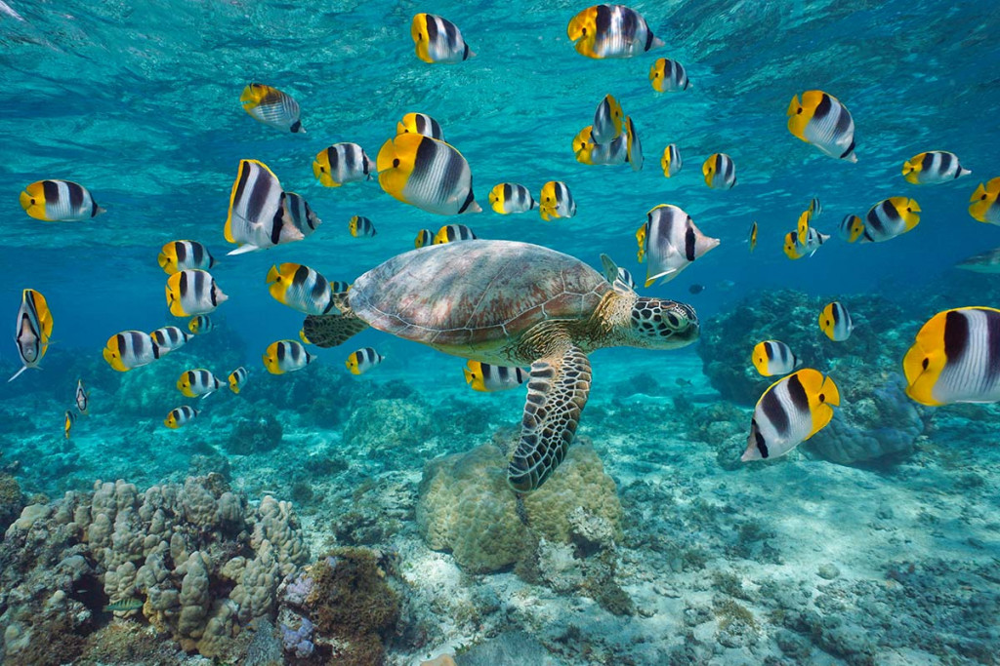

Bora-Bora

Plage matira

La mythique plage de Matira. La plage publique de Matira ou pointe de Matira, tire son nom d'un baleinier portant le nom de Mathilda de passage dans les eaux du Pacifique vers les années 1790. Ce site touristique est considéré comme l'une des plus belles plages de la perle du Pacifique.
Mont Otenamu

Plus haut sommet de Bora Bora, le mont Otemanu s’élance vers le ciel à 727 mètres au-dessus de la mer. Il n’est pas possible de gravir le volcan éteint jusqu’à son pic sans être équipé pour l’escalade. La prudence est donc de la partie. Mais cela n’enlèvera en rien à la splendeur du panorama !
Lagon de Bora-Bora
La visite du centre permet d’en apprendre plus sur les tortues, l’importance de respecter leur écosystème et ainsi vivre en harmonie avec la nature. Les intervenants font preuve d’une extraordinaire pédagogie avec un vrai souci de transmission et d’éducation. Cette activité est également très ludique et il est possible d’assister au nourrissage des tortues et même de nager à leurs côtés dans le bassin de récupération. Si vous vous demandez que faire à Bora Bora lorsqu’il pleut, le centre de protection des tortues marines est une activité qui ravira petits et grands. C’est une belle expérience pour s’émerveiller et apprendre à la fois.